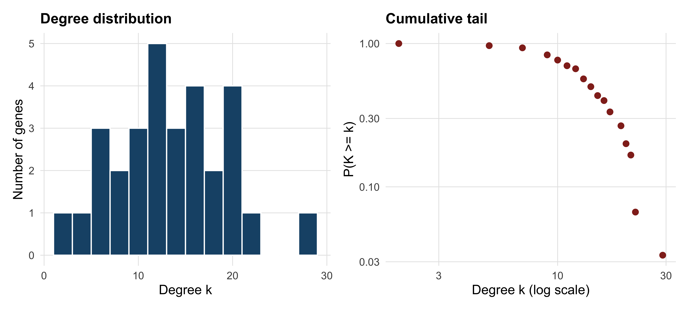
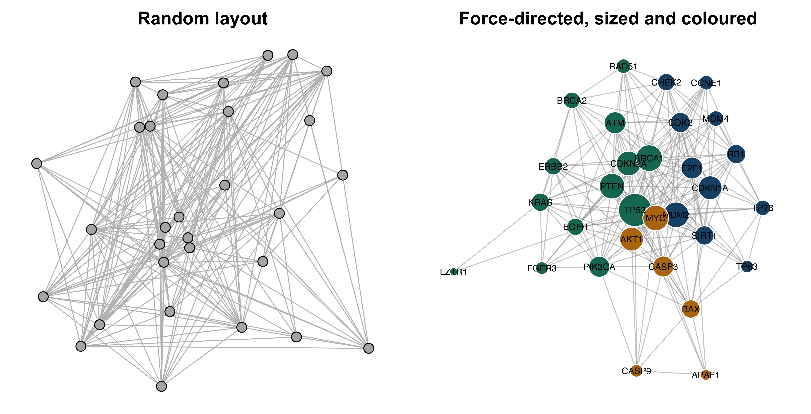
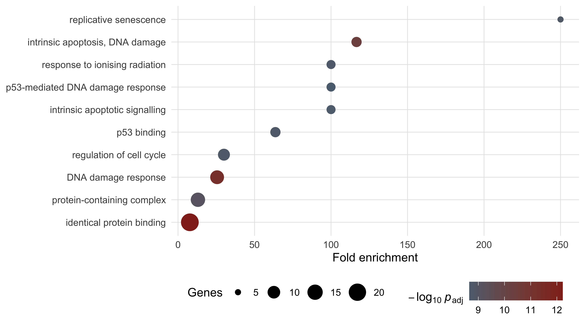
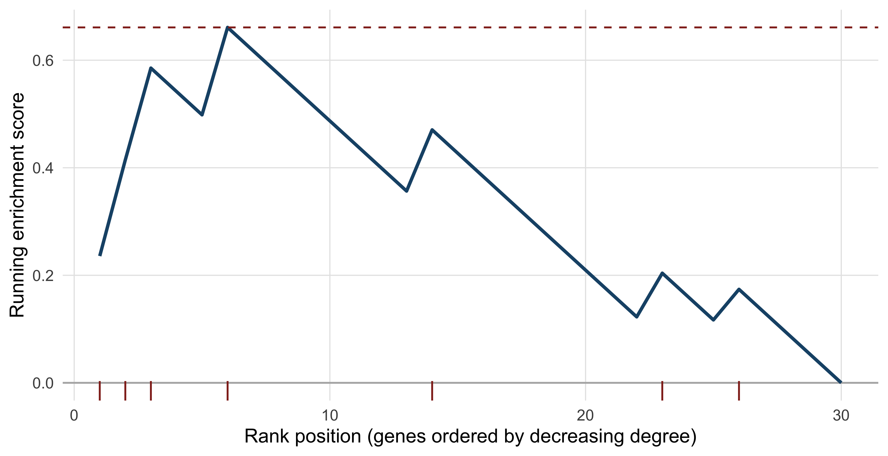

11 Biological networks and pathway analysis
After working through this chapter you will be able to
- distinguish protein–protein interaction, regulatory, metabolic and co-expression networks by the evidence that supports an edge in each
- compute degree, betweenness, clustering coefficient, shortest paths and components on a real interaction network with igraph
- judge what a degree distribution does and does not establish about network architecture
- detect modules with two community-detection algorithms and compare their answers honestly
- draw a network so that it can be read, and recognise when a drawing has stopped carrying information
- implement over-representation analysis with the hypergeometric test and control the false discovery rate
- explain why a significant enrichment term is a hypothesis rather than a finding
A differential expression analysis ends with a list: four hundred genes, each with a fold change and an adjusted p-value computed by a tool such as DESeq2 (Love, Huber, and Anders 2014). The list is a measurement, not an explanation. Nothing in it says which of those genes act together, which are upstream of which, or whether the four hundred represent one disturbed process or nine unrelated ones. The work of this chapter is to take that kind of list and place it in a structure — a network, a pathway, an annotation hierarchy — that can support an interpretation, while being candid about how much of that structure is measurement and how much is inference from the literature.
Two bundled datasets carry the chapter. The first, data/networks/p53_string_network.tsv, is a high-confidence slice of the STRING database (Szklarczyk et al. 2022) covering 30 human cell-cycle and DNA-damage genes, with each interaction broken down into the separate evidence channels that produced it. The second, data/annotation/human_go_annotations.tsv, is a UniProtKB export (Bateman et al. 2022) of 20,431 reviewed human proteins and their Gene Ontology terms, which serves as the background universe for enrichment testing.
By the end you will have measured the topology of a real network, partitioned it into modules with two algorithms that disagree, written an over-representation test from first principles rather than calling a package, corrected it for multiple testing, implemented the running-sum statistic that underlies gene set enrichment analysis, and then taken the resulting table apart to see which of its 511 significant terms survive contact with a more careful background choice.
11.1 Setting up
11.2 What a network adds to a gene list
A gene list is a set. A network is a set plus a relation, and almost every question worth asking about a group of genes is a question about the relation. Are these genes connected to each other more than chance would predict? Do they cluster into separable groups? Is there a small number of genes through which most of the connections run? Which genes, not in the list, sit between the ones that are?
That last question is the one that most often changes an experiment. If 20 genes from a 400-gene list all connect to a single transcription factor that is itself not differentially expressed, the factor becomes a candidate even though no measurement flagged it. This is the characteristic move of network biology: using known relations to reach the entities a measurement did not see, because their activity changed without their messenger RNA (mRNA) abundance changing.
The move has a cost, and it is worth stating before the first line of code. A measurement — a read count, a peak height — is an observation of the system under study. An edge in a public interaction network is an observation about a different system, usually a cell line, under different conditions, reported by somebody else, sometimes inferred rather than observed at all. When you put your measurement into a network, you are mixing two kinds of knowledge with very different error structures, and the network’s errors are mostly invisible to you. Everything else in this chapter follows from taking that seriously.
Systems biology, understood narrowly, is the attempt to explain a phenotype by the behaviour of an interacting set of components rather than by any one component. Understood broadly, it is simply the admission that genes do not act alone. The narrow version demands quantitative models — rate constants, differential equations, perturbation data — and is out of scope here. The broad version is where most practical bioinformatics lives, and its tools are graphs and annotation databases.
11.3 Kinds of network and the evidence behind an edge
Four classes of network cover most of what you will meet. They look identical once loaded into igraph (Csardi and Nepusz 2006), which is exactly the problem, because their edges mean entirely different things.
A protein–protein interaction (PPI) network has proteins as nodes and physical association as edges. “Physical association” conceals a range of evidence: a solved co-crystal structure, a yeast two-hybrid positive, an affinity-purification mass spectrometry (AP-MS) co-precipitation, or a sentence in an abstract saying two proteins “interact”. These have wildly different false positive rates, and high-throughput screens are known to be noisy in both directions.
A gene regulatory network has directed edges: transcription factor to target. Evidence ranges from a ChIP-seq peak near a promoter — which shows binding, not regulation — to a reporter assay with mutated binding sites, which shows regulation in one construct in one cell type. Direction is the valuable part and the part most often asserted from correlation.
A metabolic network is the best-grounded of the four. Nodes are metabolites and edges are enzyme-catalysed reactions with a stoichiometry established by biochemistry, often decades ago. Its uncertainty lies not in whether the reaction exists but in whether a given organism runs it under given conditions.
A co-expression network has an edge wherever two genes’ expression profiles correlate above a threshold across samples. Nothing physical is claimed. The edges are a property of the expression dataset, and change when you change the samples, the normalisation or the correlation cut-off.
Interaction databases are aggregations of published results, and publication is not a random sample of biology. A protein studied by two hundred laboratories will have hundreds of recorded partners; an equally important protein studied by two will have three. Degree in a PPI network is therefore partly a measurement of scientific attention. You will quantify this bias later in the chapter.
The STRING subnetwork bundled with the book makes this visible, because STRING keeps its evidence channels separate instead of reporting only a combined score.
string_edges <- read_tsv(book_data("networks", "p53_string_network.tsv"),
show_col_types = FALSE)
cat("edges:", nrow(string_edges),
" combined score range:", min(string_edges$score), "-",
max(string_edges$score), "\n")
#> edges: 210 combined score range: 0.701 - 0.999
names(string_edges)
#> [1] "stringId_A" "stringId_B" "preferredName_A" "preferredName_B"
#> [5] "ncbiTaxonId" "score" "nscore" "fscore"
#> [9] "pscore" "ascore" "escore" "dscore"
#> [13] "tscore"The columns from nscore to tscore are the individual channels: genomic neighbourhood, gene fusion, phylogenetic co-occurrence, co-expression, experiments, curated databases and text mining. Each is a probability-like score between 0 and 1, and the combined score integrates them. Counting how many edges each channel supports tells you what this network is actually made of.
channels <- c(neighbourhood = "nscore", fusion = "fscore",
cooccurrence = "pscore", coexpression = "ascore",
experiments = "escore", database = "dscore",
textmining = "tscore")
support <- sapply(channels, function(col) sum(string_edges[[col]] > 0))
print(support)
#> neighbourhood fusion cooccurrence coexpression experiments
#> 0 0 4 123 176
#> database textmining
#> 85 210
# Edges with no experimental and no curated-database support at all.
cat("edges resting on inference alone:",
sum(string_edges$escore == 0 & string_edges$dscore == 0), "\n")
#> edges resting on inference alone: 26Every one of the 210 edges has a text-mining score above zero, 176 have experimental support and only 85 appear in a curated database. Twenty-six edges rest on no experimental or curated evidence whatsoever: they exist because two gene names co-occur in the literature and because the genes are co-expressed. Those 26 edges are not wrong, but they are a different kind of claim from a co-crystal structure, and a result that depends on them is correspondingly weaker. Filtering by individual channel rather than by combined score is often the right first move, and is one line of dplyr: filter(escore >= 0.4) keeps the experimentally supported subnetwork.
STRING’s default web threshold is 0.400 (medium confidence); this bundle used 0.700 (high). The number of edges roughly doubles between the two, and so does every topology statistic computed from them. A network figure without a stated score threshold cannot be reproduced or compared.
11.4 Graph vocabulary and the shape of a real network
A graph is a set of nodes (also called vertices) and a set of edges joining pairs of them. An edge may be directed or undirected, and may carry a weight. The degree of a node is the number of edges touching it. A path is a sequence of edges leading from one node to another, and the shortest path between two nodes is the one with fewest edges; its length is the distance. A component is a maximal set of nodes all reachable from each other. The density of a graph is the fraction of possible edges that are present. These seven terms carry most of the chapter.
p53_net <- string_edges |>
select(preferredName_A, preferredName_B) |>
graph_from_data_frame(directed = FALSE) |>
simplify() # drop duplicate edges and any self-loops
cat("nodes:", vcount(p53_net), " edges:", ecount(p53_net), "\n")
#> nodes: 30 edges: 210
cat("density:", round(edge_density(p53_net), 3),
" mean degree:", mean(degree(p53_net)), "\n")
#> density: 0.483 mean degree: 14
cat("components:", components(p53_net)$no,
" largest:", max(components(p53_net)$csize), "\n")
#> components: 1 largest: 30Thirty nodes, 210 edges, a single connected component and a density of 0.483: nearly half of all possible pairs are joined. That is extraordinarily dense for a biological network, and the reason is the sampling, not the biology. These 30 genes were chosen as a coherent functional group and then queried against a database that already knows they belong together. A query-driven subnetwork is not a random sample of the interactome and must never be described as one.
Distances in such a graph are short by construction.
cat("diameter:", diameter(p53_net), "\n")
#> diameter: 2
cat("mean shortest path:", round(mean_distance(p53_net), 3), "\n")
#> mean shortest path: 1.517
cat("global clustering coefficient:",
round(transitivity(p53_net, type = "global"), 3), "\n")
#> global clustering coefficient: 0.646
cat("mean local clustering coefficient:",
round(transitivity(p53_net, type = "average"), 3), "\n")
#> mean local clustering coefficient: 0.726
shortest_paths(p53_net, from = "LZTR1", to = "BAX", output = "vpath")$vpath[[1]]
#> + 3/30 vertices, named, from d94d007:
#> [1] LZTR1 TP53 BAXThe diameter is two: every gene reaches every other in at most two steps. The clustering coefficient measures how often a node’s neighbours are themselves neighbours — formally, the fraction of connected triples that close into triangles. At 0.646 globally this network is highly cliquish, which again reflects the curated selection of genes. A genome-scale PPI network typically has a mean distance near four and a clustering coefficient around 0.1.
The degree distribution is where the most common over-claim in network biology lives. Figure 11.1 shows it two ways: as a histogram, and as the complementary cumulative distribution on logarithmic axes, which is the plot people use when arguing that a network is scale-free.
node_degree <- degree(p53_net)
hist_panel <- ggplot(data.frame(k = node_degree), aes(k)) +
geom_histogram(binwidth = 2, fill = book_palette[1], colour = "white") +
labs(x = "Degree k", y = "Number of genes", title = "Degree distribution")
ccdf <- data.frame(k = sort(unique(node_degree))) |>
mutate(p_ge_k = sapply(k, function(x) mean(node_degree >= x)))
ccdf_panel <- ggplot(ccdf, aes(k, p_ge_k)) +
geom_point(colour = book_palette[4], size = 2) +
scale_x_log10() + scale_y_log10() +
labs(x = "Degree k (log scale)", y = "P(K >= k)", title = "Cumulative tail")
patchwork::wrap_plots(hist_panel, ccdf_panel)
Read the right-hand panel carefully. It contains 17 points. A straight line through 17 points on log–log axes is not evidence of a power law, and the claim that biological networks are scale-free — that the probability of degree k falls as k raised to some negative power, producing a few enormous hubs — has been tested far more loosely than its popularity suggests (Broido and Clauset 2019). Fitting a power law requires hundreds of nodes, a maximum-likelihood estimate of the exponent, a lower cut-off chosen by the data rather than by eye, and a goodness-of-fit test against alternatives such as the log-normal. None of that is possible here, and saying “the network is scale-free” on the strength of a plot like this one is a claim your reader cannot check.
What survives is weaker and more useful: degree is unevenly distributed, with a handful of genes far above the mean of 14 and several at the bottom. That unevenness is worth investigating regardless of what functional form generates it.
11.5 Centrality, hubs and study bias
Centrality is any measure of how important a node is to the structure of a graph, and the choice of measure encodes what you mean by important. Degree counts connections. Betweenness counts how many shortest paths between other pairs of nodes pass through a node, identifying bridges between otherwise separate regions. Closeness measures how near a node is to all others on average.
centrality <- data.frame(
gene = names(node_degree),
degree = as.integer(node_degree),
betweenness = round(betweenness(p53_net, normalized = TRUE), 3),
closeness = round(closeness(p53_net, normalized = TRUE), 3)
) |> arrange(desc(degree))
head(centrality, 8)
#> gene degree betweenness closeness
#> TP53 TP53 29 0.170 1.000
#> BRCA1 BRCA1 22 0.037 0.806
#> MDM2 MDM2 21 0.034 0.784
#> PTEN PTEN 21 0.034 0.784
#> MYC MYC 21 0.034 0.784
#> CDKN2A CDKN2A 20 0.033 0.763
#> CDKN1A CDKN1A 19 0.020 0.744
#> AKT1 AKT1 19 0.025 0.744TP53 has degree 29 in a 30-node graph: it is joined to everything. Its normalised betweenness, 0.170, is five times that of the next gene, so it also lies on most shortest paths. In a network assembled by querying a database for p53-associated genes, this is not a discovery. It is the query, returned.
The deeper problem is that hub status in any literature-derived network partly measures how much a gene has been studied. The bundled GO annotation file gives a direct proxy for study intensity — the number of GO terms a gene carries — and the relationship is strong.
go_annotations <- read_tsv(book_data("annotation", "human_go_annotations.tsv"),
show_col_types = FALSE)
gene_to_go <- go_annotations |>
filter(!is.na(`Gene Ontology IDs`), !is.na(`Gene Names (primary)`)) |>
transmute(gene = `Gene Names (primary)`, go = `Gene Ontology IDs`) |>
separate_longer_delim(go, delim = "; ") |>
distinct()
terms_per_gene <- count(gene_to_go, gene, name = "n_go")
bias <- inner_join(centrality, terms_per_gene, by = "gene")
cat("Spearman correlation of degree with GO-term count:",
round(cor(bias$degree, bias$n_go, method = "spearman"), 3), "\n")
#> Spearman correlation of degree with GO-term count: 0.746
cat("median GO terms, all human proteins:", median(terms_per_gene$n_go),
" in this network:", median(bias$n_go), "\n")
#> median GO terms, all human proteins: 9 in this network: 54.5The rank correlation between degree and annotation count is 0.746. Genes in this network carry a median of 54.5 GO terms against a genome-wide median of nine. Two explanations compete: important genes attract both interactions and annotations, or well-studied genes accumulate both. Both are partly true, and no analysis of the network alone can separate them.
“We identified TP53 as a hub and therefore a key regulator” is a sentence that cannot be falsified by the data that produced it. The defensible version names the hub, states the evidence channels behind its edges, acknowledges the literature bias, and proposes the experiment that would settle it — a knockdown, a degron, a dose–response.
11.6 Finding modules
A community or module is a group of nodes with more edges inside the group than to the rest of the network. Modularity, written Q, scores a partition by comparing its within-group edge count to the count expected if edges were rewired at random; Q above roughly 0.3 is usually taken as meaningful structure. Community detection algorithms search for partitions with high Q.
Two popular algorithms take different routes. The Louvain method (Blondel et al. 2008) moves nodes between communities greedily and then collapses communities into nodes, repeating until Q stops improving. Fast greedy modularity optimisation instead merges the pair of communities that most increases Q, building a dendrogram and cutting it at the maximum. Running both on the same graph is the minimum honest practice.
set.seed(20250101)
louvain <- cluster_louvain(p53_net)
greedy <- cluster_fast_greedy(p53_net)
walktrap <- cluster_walktrap(p53_net)
partitions <- list(Louvain = louvain, FastGreedy = greedy, Walktrap = walktrap)
for (method in names(partitions)) {
result <- partitions[[method]]
cat(method, ": k =", length(result),
" Q =", round(modularity(result), 3),
" sizes =", paste(sizes(result), collapse = ","), "\n")
}
#> Louvain : k = 3 Q = 0.137 sizes = 11,13,6
#> FastGreedy : k = 3 Q = 0.135 sizes = 12,7,11
#> Walktrap : k = 4 Q = 0.109 sizes = 15,4,10,1Louvain finds three communities with Q = 0.137; fast greedy also finds three, with Q = 0.135; walktrap finds four with Q = 0.109. All three values are far below 0.3. The correct conclusion is that this network has no strong modular structure — which is what you should expect from a dense, hand-picked set of genes that all participate in one broad process. The algorithms still return a partition, because they always do. An algorithm that cannot say “no structure here” will never say it.
How much do the two best partitions agree? The adjusted Rand index compares two clusterings, scoring 1 for identical partitions and about 0 for the agreement expected by chance.
cat("adjusted Rand index, Louvain vs fast greedy:",
round(compare(louvain, greedy, method = "adjusted.rand"), 3), "\n")
#> adjusted Rand index, Louvain vs fast greedy: 0.7
table(Louvain = membership(louvain), FastGreedy = membership(greedy))
#> FastGreedy
#> Louvain 1 2 3
#> 1 10 1 0
#> 2 2 0 11
#> 3 0 6 0An adjusted Rand index of 0.700 means substantial but incomplete agreement: the cross-tabulation shows one 10-gene core assigned together by both methods, an 11-gene group likewise, and three genes that move. Those three genes are the interesting ones — they are the genes whose module membership is an artefact of the algorithm, and no biological story should be built on them.
A third algorithm illustrates how badly the choice can go. The Girvan–Newman method (Girvan and Newman 2002), available as cluster_edge_betweenness(), removes the highest-betweenness edge repeatedly and is elegant but quadratic in the number of edges. On this dense graph it returns 20 communities, 19 of them singletons, with Q = 0.009. Dense graphs defeat it, and the method suits sparse networks with genuine bottlenecks instead.
11.7 Drawing a network that can be read
Network figures fail in a characteristic way. Past a few hundred edges, a force-directed layout produces an undifferentiated mass — a “hairball” — in which every node is adjacent to a dark region and nothing can be traced. The failure is not aesthetic. A hairball transmits no information, so a figure that is one is a figure that should have been a table.
Figure 11.2 makes the comparison directly. The left panel places the same 30 nodes at random; the right panel uses the Fruchterman–Reingold force-directed layout, sizes nodes by degree and colours them by Louvain community.
module_colour <- book_palette[membership(louvain)]
par(mfrow = c(1, 2), mar = c(0.5, 0.5, 2, 0.5))
set.seed(20250101)
plot(p53_net, layout = layout_randomly, vertex.label = NA,
vertex.size = 6, vertex.color = "grey70",
edge.color = "grey75", main = "Random layout")
set.seed(20250101)
plot(p53_net, layout = layout_with_fr,
vertex.size = 4 + 0.6 * node_degree,
vertex.color = module_colour, vertex.frame.color = "white",
vertex.label.cex = 0.6, vertex.label.color = "black",
vertex.label.family = "sans",
edge.color = adjustcolor("grey60", alpha.f = 0.5),
main = "Force-directed, sized and coloured")
The right-hand panel is legible only because there are 30 nodes. Three habits keep larger networks readable. First, filter before drawing: raise the confidence threshold, keep the largest component, or show only the subgraph induced by the genes you will discuss. Second, encode at most two variables visually — size for one quantity, colour for another — and put everything else in a table. Third, label selectively; a label on every node is a label on none. When filtering cannot rescue the figure, present the topology as numbers and show only the subnetwork around the genes under discussion.
11.8 Pathway resources and over-representation analysis
Three resources dominate functional interpretation. The Gene Ontology (GO) is a structured vocabulary of terms in three namespaces — biological process, molecular function and cellular component — arranged as a directed acyclic graph in which a term implies all its ancestors (Ashburner et al. 2000; Aleksander et al. 2023). KEGG curates metabolic and signalling pathway maps with defined reactions and topology (Kanehisa 2000). Reactome curates reactions at finer granularity, with explicit inputs, outputs, catalysts and literature evidence for each step (Milacic et al. 2023). GO annotates genes with terms; KEGG and Reactome place gene products inside a described mechanism. GO has the widest coverage, Reactome the most explicit evidence trail.
Over-representation analysis (ORA) asks a single question: given a background universe of genes, a gene set defined by an annotation term, and a query list, are more query genes annotated to that term than you would expect by chance? The exact test is the hypergeometric distribution — the distribution of the number of white balls drawn when sampling n balls without replacement from an urn holding K white and N − K black. Here N is the universe, K the term’s size, n the query list size and k the observed overlap.
The annotation table must first be reshaped from one row per protein to one row per gene–term pair — the form every enrichment tool uses internally. The separate_longer_delim() call in the previous section did exactly this, and the tidyverse idiom generalises to any semicolon-delimited annotation column (Wickham et al. 2019).
The query list is the 30 network genes, all of which map to the universe. The test itself is one call to phyper(). Note the k - 1 and lower.tail = FALSE: you want P(X ≥ k), and phyper(q, ...) with the upper tail returns P(X > q).
query_genes <- V(p53_net)$name
n_query <- length(query_genes)
N <- length(universe)
enrichment <- gene_to_go |>
filter(gene %in% query_genes) |>
count(go, name = "k") |>
inner_join(term_sizes, by = "go") |>
filter(K >= 5, K <= 2000) |> # drop terms too small or too vague to test
mutate(expected = round(n_query * K / N, 2),
p_value = phyper(k - 1, K, N - K, n_query, lower.tail = FALSE),
p_adj = p.adjust(p_value, method = "BH")) |>
arrange(p_value)
cat("terms tested:", nrow(enrichment),
" significant at BH < 0.05:", sum(enrichment$p_adj < 0.05), "\n")
#> terms tested: 830 significant at BH < 0.05: 511
head(enrichment, 6)
#> # A tibble: 6 x 6
#> go k K expected p_value p_adj
#> <chr> <int> <int> <dbl> <dbl> <dbl>
#> 1 GO:0042802 21 1744 2.72 7.23e-16 6.00e-13
#> 2 GO:0006974 12 303 0.47 1.25e-14 5.19e-12
#> 3 GO:0008630 7 39 0.06 1.56e-13 4.32e-11
#> 4 GO:0032991 13 641 1 3.91e-12 8.11e-10
#> 5 GO:0090399 5 13 0.02 8.26e-12 1.37e- 9
#> 6 GO:0051726 9 195 0.3 1.11e-11 1.54e- 9That is over-representation analysis in its entirety. A package such as clusterProfiler (Yu et al. 2012) adds term-name lookup, ontology-aware filtering, plotting and support for many organisms, but the statistic underneath is the call you just made. Knowing this matters when a tool and your own calculation disagree: the difference will be in the universe, the term-size filter or the ontology propagation, never in the distribution.
Two filtering decisions were made above and both are conventional rather than principled. Terms with fewer than five annotated genes produce unstable estimates and dominate the tail of small p-values for trivial reasons. Terms with more than 2,000 genes — “protein binding”, “cytoplasm” — are too vague to interpret even when significant. State both bounds in your methods; they change the answer.
Correcting for multiple testing
Testing 830 terms at a 5% threshold would be expected to yield about 42 false positives by chance alone. The Bonferroni correction divides the threshold by the number of tests, controlling the probability of even one false positive but discarding real signal. The Benjamini–Hochberg procedure instead controls the false discovery rate (FDR): the expected proportion of false positives among the terms you call significant (Benjamini and Hochberg 1995). For exploratory enrichment, where the output is a list of hypotheses rather than a single decision, FDR control is the right trade-off; p.adjust(method = "BH") applies it.
617 terms pass uncorrected, 511 survive FDR control and 82 survive Bonferroni. The gap between 511 and 82 is the price of the two error rates, and the fact that 511 of 830 tested terms are “significant” is itself a warning that the chapter returns to below. An alternative to BH is Storey’s q-value, which estimates the proportion of true null hypotheses rather than assuming it is one, and typically calls more terms significant (Storey and Tibshirani 2003).
The annotation file carries GO identifiers but not term names. Names come from the ontology itself; the EBI QuickGO service resolves identifiers in a single request.
That request, run on 15 October 2026, returned the following (the service does not preserve the order of the identifiers you send):
id name
1 GO:0002039 p53 binding
2 GO:0008630 intrinsic apoptotic signaling pathway in response to DNA damage
3 GO:0042802 identical protein binding
4 GO:0030330 DNA damage response, signal transduction by p53 class mediator
5 GO:0032991 protein-containing complex
6 GO:0090399 replicative senescence
7 GO:0006974 DNA damage response
8 GO:0051726 regulation of cell cycle
9 GO:0097193 intrinsic apoptotic signaling pathway
10 GO:0071479 cellular response to ionizing radiationFigure 11.3 plots them in the standard form: effect on one axis, evidence on the other.
go_labels <- c(
"GO:0042802" = "identical protein binding",
"GO:0006974" = "DNA damage response",
"GO:0008630" = "intrinsic apoptosis, DNA damage",
"GO:0032991" = "protein-containing complex",
"GO:0090399" = "replicative senescence",
"GO:0051726" = "regulation of cell cycle",
"GO:0002039" = "p53 binding",
"GO:0071479" = "response to ionising radiation",
"GO:0097193" = "intrinsic apoptotic signalling",
"GO:0030330" = "p53-mediated DNA damage response")
top_terms <- enrichment |>
slice_head(n = 10) |>
mutate(term = go_labels[go],
fold = k / expected)
ggplot(top_terms, aes(fold, reorder(term, fold))) +
geom_point(aes(size = k, colour = -log10(p_adj))) +
scale_colour_gradient(low = book_palette[8], high = book_palette[4]) +
scale_size_continuous(range = c(2, 7)) +
labs(x = "Fold enrichment", y = NULL,
size = "Genes", colour = expression(-log[10]~italic(p)[adj]))
The pattern in Figure 11.3 is the one every ORA produces. Specific terms — replicative senescence, p53 binding — show fold enrichments of 60 to 250 on a handful of genes. The two broadest terms, each covering hundreds of proteins, show fold enrichments under 14 across many genes. Both kinds are significant; only the specific ones say anything.
11.9 Rank-based enrichment
ORA requires a cut-off. Genes are in the list or out of it, and a gene just below the threshold contributes nothing while its neighbour just above contributes fully. Gene set enrichment analysis (GSEA) removes the cut-off by using the whole ranked list (Subramanian et al. 2005). Walk down the ranking from the top; add to a running sum when you meet a member of the gene set, subtract when you meet a non-member. If the set’s members are concentrated near the top, the running sum climbs to a large positive peak before falling back. That peak is the enrichment score (ES).
The function is short enough to write out, which is the point of writing it out.
A ranking is needed. In a real analysis it would be a differential expression statistic across every measured gene. Here, to keep every number in the chapter computable from bundled data, the 30 network genes are ranked by degree and tested against the p53-binding gene set. This is a demonstration of mechanics on a deliberately small list, not an analysis anyone would publish.
ranked_by_degree <- sort(node_degree, decreasing = TRUE)
p53_binders <- gene_to_go |>
filter(go == "GO:0002039", gene %in% names(ranked_by_degree)) |>
pull(gene)
walk <- running_enrichment(ranked_by_degree, p53_binders)
observed_es <- walk[which.max(abs(walk))]
set.seed(20250101)
null_es <- replicate(2000, {
shuffled <- setNames(ranked_by_degree, sample(names(ranked_by_degree)))
w <- running_enrichment(sort(shuffled, decreasing = TRUE), p53_binders)
w[which.max(abs(w))]
})
cat("set size:", length(p53_binders),
" ES:", round(observed_es, 3),
" permutation p:", round((1 + sum(null_es >= observed_es)) / 2001, 4), "\n")
#> set size: 7 ES: 0.661 permutation p: 0.0195The enrichment score is 0.661, reached after six steps, with a permutation p-value of 0.0195 against 2,000 gene-label shuffles. Figure 11.4 shows the walk.
walk_frame <- data.frame(position = seq_along(walk), score = walk,
hit = names(ranked_by_degree) %in% p53_binders)
ggplot(walk_frame, aes(position, score)) +
geom_hline(yintercept = 0, colour = "grey70") +
geom_line(colour = book_palette[1], linewidth = 0.9) +
geom_hline(yintercept = observed_es, linetype = "dashed",
colour = book_palette[4]) +
geom_rug(data = subset(walk_frame, hit), sides = "b",
colour = book_palette[4], length = grid::unit(0.05, "npc")) +
labs(x = "Rank position (genes ordered by decreasing degree)",
y = "Running enrichment score")
Two differences from ORA matter. GSEA uses every gene, so a set whose members are all modestly shifted in the same direction can be significant even though no single member passes a differential expression threshold — a pattern ORA cannot see. And the null distribution is built by permutation rather than from a closed form, which means the result depends on what you permute. Shuffling gene labels, as above, asks whether this set is more concentrated at the top than a random set of the same size — a competitive null. Shuffling sample labels and recomputing the statistic asks whether the set responds to the treatment — a self-contained null, and the one GSEA uses when sample numbers allow. The two answer different questions and frequently disagree.
GSEA results change with the ranking statistic. Ranking by p-value discards direction; by raw fold change over-weights low-expression genes with unstable ratios; by the signed test statistic or shrunken log fold change is usually the defensible choice. Report which you used.
11.10 Reading an enrichment table honestly
The enrichment table computed above declares 511 of 830 terms significant. No set of 30 genes participates in 511 distinct biological processes. Four problems explain the number, and all four are present in published analyses.
The background universe. The hypergeometric test compares your query to a specific population, and changing that population changes every p-value. If your experiment measured 12,000 expressed genes, the universe is those 12,000, not the 20,431 proteins in the proteome — testing against the proteome credits you for an enrichment that is merely the enrichment of expressed genes. Study bias makes this sharper. Replacing the universe with a background matched for study intensity — genes carrying at least 20 GO terms, a proxy for how heavily investigated a gene is — changes the answer substantially.
well_studied <- terms_per_gene$gene[terms_per_gene$n_go >= 20]
N_matched <- length(well_studied)
matched <- gene_to_go |>
filter(gene %in% well_studied) |>
count(go, name = "K_matched") |>
inner_join(count(filter(gene_to_go, gene %in% query_genes), go, name = "k"),
by = "go") |>
filter(K_matched >= 5, K_matched <= 2000) |>
mutate(p_value = phyper(k - 1, K_matched, N_matched - K_matched,
n_query, lower.tail = FALSE),
p_adj = p.adjust(p_value, method = "BH"))
cat("matched background size:", N_matched, "genes\n")
#> matched background size: 3433 genes
cat("significant terms, proteome background:", sum(enrichment$p_adj < 0.05), "\n")
#> significant terms, proteome background: 511
cat("significant terms, study-matched background:",
sum(matched$p_adj < 0.05), "\n")
#> significant terms, study-matched background: 121The significant-term count falls from 511 to 121 — under a quarter of the original — with no change to the query list and no change to the test. The top terms survive and the long tail does not, which is exactly the diagnostic value of the comparison.
Annotation bias. Enrichment can only find processes that have been annotated. The median human gene carries nine GO terms and the genes in this network carry 54.5, so terms describing well-studied biology have more opportunity to be hit. A gene set enriched for cancer genes will appear enriched for apoptosis partly because apoptosis is what cancer genes get annotated for.
Redundancy. GO is a hierarchy, and a gene annotated to a term is annotated to all of that term’s ancestors. Significant terms therefore arrive in correlated families, and a list of twenty is rarely twenty independent findings.
top_ten <- head(enrichment$go, 10)
members <- lapply(top_ten, function(term)
intersect(gene_to_go$gene[gene_to_go$go == term], query_genes))
jaccard <- outer(seq_along(top_ten), seq_along(top_ten),
Vectorize(function(i, j)
length(intersect(members[[i]], members[[j]])) /
length(union(members[[i]], members[[j]]))))
cat("mean Jaccard overlap among the top ten terms:",
round(mean(jaccard[upper.tri(jaccard)]), 3),
" maximum:", round(max(jaccard[upper.tri(jaccard)]), 3), "\n")
#> mean Jaccard overlap among the top ten terms: 0.268 maximum: 0.571The ten leading terms share a mean Jaccard overlap of 0.268 and a maximum of 0.571: the same handful of genes is driving many of them. Reporting them as ten results would be counting the same evidence ten times. Semantic-similarity clustering of terms, or reporting only the most specific significant term in each branch, is the usual remedy.
Circularity. The 30 genes in this network were selected because they are cell-cycle and DNA-damage genes. Finding that they are enriched for cell-cycle and DNA-damage terms confirms the selection, not a biological hypothesis. The same circularity appears whenever a query list is assembled using prior knowledge — genes from a pathway database, from a review, from a curated portal such as cBioPortal (Cerami et al. 2012) — and then tested against that knowledge. The protection is to fix the query list from the measurement alone, before any annotation is consulted.
An enrichment result says that an annotation category is over-represented in a list, given a background, under a test with stated filters. It does not say the process is active, that it is causal, or that it is the most important thing happening. The claim that a pathway is involved requires perturbation: inhibit it, knock it down, and measure whether the phenotype moves.
11.11 Summary
- A network adds a relation to a gene list, and most useful network questions — connectivity, modules, bridging nodes — are questions about that relation.
- Edges in different network classes carry different evidence. STRING’s channel scores make this explicit: every edge in the bundled subnetwork has text-mining support, 176 of 210 have experimental support and only 85 are in a curated database.
- Topology statistics describe the network you were given, not the interactome. A query-driven subnetwork is dense, short-pathed and cliquish by construction.
- Degree distributions from small networks cannot establish scale-free architecture; claiming it requires hundreds of nodes and a fitted, tested model.
- Hub status in literature-derived networks partly measures study intensity: degree correlates with GO annotation count at Spearman 0.746 in this network.
- Community detection always returns communities. Low modularity across several algorithms, and disagreement between them, is the signal that the partition is not real.
- Over-representation analysis is one hypergeometric test per term, and knowing that is what lets you diagnose a tool that disagrees with you.
- Multiple testing correction is mandatory; Benjamini–Hochberg controls the false discovery rate and is the right choice for exploratory enrichment.
- GSEA uses the whole ranked list and so detects coordinated small shifts that ORA misses, at the cost of depending on the ranking statistic and the permutation scheme.
- The background universe is a scientific choice, not a default. Matching it for study intensity cut the significant-term count in this chapter from 511 to 121.
11.12 Exercises
- Load the STRING edge table and report how many edges have a combined score of at least 0.900. What fraction of the original 210 does that leave?
- Build the subnetwork containing only edges with experimental support (
escore > 0) and compare its node count, edge count and density with the full network. - Compute the local clustering coefficient of every node and identify the gene with the lowest value. Explain, from its degree and its neighbours, why it is low.
- The chapter ranked genes by degree. Rank them instead by betweenness and rerun the running-enrichment calculation for GO:0002039. Does the enrichment score change, and should it?
- Run the over-representation analysis using only the genes of the largest Louvain community as the query. How many terms are significant, and how do the leading terms differ from those found for all 30 genes?
- Repeat the analysis of exercise 5 with the term-size filter removed entirely. Report how many terms become significant and inspect the five smallest terms among them.
- A colleague’s manuscript states: “Network analysis identified MDM2 as a hub with high betweenness centrality, establishing it as a master regulator of the DNA damage response.” Rewrite the sentence so that it is supported by the analysis in this chapter, and list the additional evidence that would be needed for the original claim.
- Using the GO annotation table alone, compare the distribution of GO-term counts for the 30 network genes with 30 genes drawn at random from the universe. What does the comparison imply for any enrichment analysis that uses the whole proteome as background?
11.13 Solutions
1. Just over half the edges in this already-filtered table reach the top confidence band, which follows from how the slice was built rather than from any property of STRING as a whole.
2. Dropping text-mining-only edges removes a fifth of the network and lowers its density, but leaves it connected.
experimental <- string_edges |>
filter(escore > 0) |>
select(preferredName_A, preferredName_B) |>
graph_from_data_frame(directed = FALSE) |>
simplify()
cat("experimental subnetwork: nodes", vcount(experimental),
" edges", ecount(experimental),
" density", round(edge_density(experimental), 3), "\n")
#> experimental subnetwork: nodes 30 edges 176 density 0.4053. The lowest local clustering coefficient belongs to TP53, the highest-degree node. Local clustering asks what fraction of a node’s neighbour pairs are themselves joined; because TP53 is adjacent to all 29 other genes its neighbourhood is the whole network, including every sparsely connected gene in it. High degree therefore pushes local clustering down, which is why degree and clustering must never be read as interchangeable measures of importance.
4. The enrichment score rises from 0.661 to 0.874. Degree and betweenness are correlated but not identical, and reordering even a few genes near the top of a 30-element list moves the running sum substantially. The score should change, because it is a statistic of a particular ranking. What must not change between rankings is the conclusion drawn from it, and a conclusion that flips when you swap centrality measures was never supported in the first place.
ranked_by_btw <- sort(betweenness(p53_net, normalized = TRUE), decreasing = TRUE)
walk_btw <- running_enrichment(ranked_by_btw, p53_binders)
cat("ES by betweenness:", round(walk_btw[which.max(abs(walk_btw))], 3),
" (by degree:", round(observed_es, 3), ")\n")
#> ES by betweenness: 0.874 (by degree: 0.661 )5. The largest Louvain community holds 13 genes, and the smaller query yields 369 significant terms rather than 511. The leading terms shift: a small, specific complex term now outranks the broad binding terms that led the 30-gene analysis.
module_genes <- names(membership(louvain))[membership(louvain) ==
which.max(sizes(louvain))]
module_enrichment <- gene_to_go |>
filter(gene %in% module_genes) |>
count(go, name = "k") |>
inner_join(term_sizes, by = "go") |>
filter(K >= 5, K <= 2000) |>
mutate(p_value = phyper(k - 1, K, N - K, length(module_genes),
lower.tail = FALSE),
p_adj = p.adjust(p_value, method = "BH")) |>
arrange(p_value)
cat("module size:", length(module_genes),
" significant terms:", sum(module_enrichment$p_adj < 0.05), "\n")
#> module size: 13 significant terms: 369
head(module_enrichment, 3)
#> # A tibble: 3 x 5
#> go k K p_value p_adj
#> <chr> <int> <int> <dbl> <dbl>
#> 1 GO:0000152 3 6 0.00000000481 0.00000131
#> 2 GO:0071479 4 36 0.00000000728 0.00000131
#> 3 GO:0042802 10 1744 0.00000000806 0.000001316. Removing the size filter admits many tiny terms whose significance rests on one or two genes, inflating the count and the correction burden together.
unfiltered <- gene_to_go |>
filter(gene %in% module_genes) |>
count(go, name = "k") |>
inner_join(term_sizes, by = "go") |>
mutate(p_value = phyper(k - 1, K, N - K, length(module_genes),
lower.tail = FALSE),
p_adj = p.adjust(p_value, method = "BH")) |>
arrange(p_value)
cat("terms tested:", nrow(unfiltered),
" significant:", sum(unfiltered$p_adj < 0.05), "\n")
#> terms tested: 566 significant: 447
unfiltered |> filter(p_adj < 0.05) |> arrange(K) |> head(5)
#> # A tibble: 5 x 5
#> go k K p_value p_adj
#> <chr> <int> <int> <dbl> <dbl>
#> 1 GO:0014870 1 1 0.000675 0.00496
#> 2 GO:0030575 1 1 0.000675 0.00496
#> 3 GO:0033593 1 1 0.000675 0.00496
#> 4 GO:0048640 1 1 0.000675 0.00496
#> 5 GO:0051097 1 1 0.000675 0.004967. A defensible version: “MDM2 has the third-highest degree (21 of a possible 29) in a high-confidence STRING subnetwork of 30 cell-cycle and DNA-damage genes. Because the subnetwork was assembled by querying a literature-derived database around p53, this reflects both interaction evidence and study intensity, and is a candidate for functional testing rather than evidence of regulatory control.” Establishing master-regulator status would require perturbation data — knockdown or degradation of MDM2 followed by transcriptome-wide measurement — in the relevant cell type, direct binding evidence for the proposed targets, and a demonstration that the effect is not reproduced by perturbing its neighbours.
8. Random genes carry far fewer annotations, so a proteome-wide background compares a heavily annotated query against a sparsely annotated population and over-states enrichment for every well-studied term.
set.seed(20250101)
random_genes <- sample(universe, 30)
cat("median GO terms - network genes:",
median(terms_per_gene$n_go[terms_per_gene$gene %in% query_genes]),
" random genes:",
median(terms_per_gene$n_go[terms_per_gene$gene %in% random_genes]), "\n")
#> median GO terms - network genes: 54.5 random genes: 811.14 Further reading
- Szklarczyk et al. (2022) documents STRING’s evidence channels and scoring scheme; read it before using a combined score as though it were a single kind of evidence.
- Aleksander et al. (2023) is the current description of the Gene Ontology knowledgebase, including how annotations are assigned, evidence-coded and propagated.
- Milacic et al. (2023) describes Reactome’s curation model, which is the clearest published account of what a curated pathway database does and does not contain.
- Subramanian et al. (2005) introduced gene set enrichment analysis; the methods section explains the weighting and permutation choices that the simplified implementation above leaves out.
- Benjamini and Hochberg (1995) is the original false discovery rate paper and remains the shortest route to understanding what an adjusted p-value means.
- Yu et al. (2012) describes clusterProfiler, the package you will use in practice once you understand the hypergeometric test underneath it.
- Kanehisa (2000) introduces KEGG and its pathway map abstraction, which differs from both GO’s vocabulary and Reactome’s reaction-level curation.
- Huber et al. (2015) surveys the Bioconductor ecosystem in which most R-based enrichment and network workflows are assembled.
- Robertson et al. (2017) is a large tumour characterisation study whose pathway-level figures are worth reading critically against the cautions in this chapter.